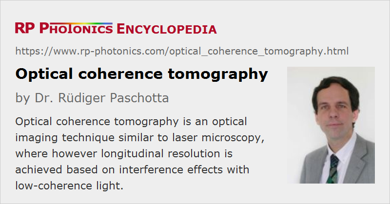

Optical Coherence Tomography
Acronym: OCT
Definition: an optical imaging technique where longitudinal resolution is achieved based on interference effects with low-coherence light
German: optische Kohärenztomographie
Categories: vision, displays and imaging, optical metrology, methods
How to cite the article; suggest additional literature
Author: Dr. Rüdiger Paschotta
Optical coherence tomography is a widely used high-resolution optical imaging technique, which is typically applied to transparent or semi-transparent objects of limited depth – in particular, to biological tissues. It is suitable for various applications in medical imaging such as ophthalmology (e.g. retinal imaging for diagnosing conditions like glaucoma or macular degeneration), dermatology, oncology (cancer detection) and cardiology; the capability of high-resolution (possibly sub-micrometer) real-time in-vivo imaging makes OCT a valuable tool for the diagnosis of many different medical conditions as well as for medical research.
Working Principles of OCT
Optical coherence tomography has some similarity to laser microscopy (although in many cases a laser source is not used). In two transverse dimensions, image resolution is obtained by scanning a tightly focused light beam over the sample and performing measurements on back-scattered light. In the third (longitudinal) dimension, one exploits the principle of low-coherence interferometry. The 3D nature of the obtained images is of course an essential advantage. At the same time, the spatial resolution can be much higher than e.g. with ultrasound imaging methods.
Time Domain OCT
We begin with the originally conceived operation principle [1], now called time domain OCT. It is based on the principle of white light interferometry as explained in the article on white light interferometers. Essentially, in a Michelson or Mach–Zehnder interferometer, back-scattered light from the sample is superimposed with light from a reference beam, which is obtained with a beam splitter in the path from the light source to the sample. Only light from a selected small depth range can contribute to an oscillatory signal since only that light has a substantial temporal coherence with the reference beam. Back-scattered light from outside that selected depth range cannot contribute, being outside the coherence length of the light. For obtaining high longitudinal resolution, one needs to apply light with a very short coherence length, i.e., low temporal coherence and a large optical bandwidth.
The length of an optical delay line is scanned (usually with mechanical means such as a piezo transducer) in order to access different longitudinal positions in the sample. During that scan, one records the overall back-scattered optical powers and associates them with the different positions.
One can thus acquire image information for one voxel (three-dimensional pixel) at a time, and a computer controlling the instrument can rapidly scan both the transverse beam position and the longitudinal coordinate. The computer can then collect all the image data to produce a three-dimensional image. Images can – often after sophisticated processing – be inspected on a computer screen or printed out. (Figure 1 is an example for a pseudo-3D image.) This is again similar to laser microscopy.
Fourier Domain OCT
Later on, a more refined class of techniques has been invented, which is called Fourier domain OCT (FD-OCT). Here, one does measurements without scanning a delay.
According to a first variant of Fourier domain OCT, called spectral domain OCT [2], instead of recording not only the overall back-scattered optical powers, one records whole optical spectra of that light, using some kind of spectrograph. (For example, one may spatially disperse the light at a diffraction grating before sending it to a linear photodetector array.) Essentially, one can consider each optical wavelength to provide information about the variation of optical properties of the sample with a certain spatial period. The spatial dependence can then be retrieved by applying a Fourier transform.
Another realization of Fourier domain OCT is swept source OCT (SS-OCT) [3, 4, 7], where one uses a wavelength-swept laser (see below) and a photodetector without spectral resolution; the latter is sufficient because different wavelengths are probed at different times. So one obtains the same information – essentially frequency-dependent reflectivities – and can apply a Fourier transform to obtain a depth profile.
With any such frequency domain OCT methods, one measurement produces a whole depth profile, and by scanning only the transverse beam position one again obtains a three-dimensional image.
Generally, Fourier domain OCT methods offer two crucial advantages over time domain OCT:
- One obtains a higher sensitivity by providing an improved signal-to-noise ratio, which is ultimately limited only by shot noise. The fundamental sensitivity advantage was clearly recognized and understood only several years after the invention of Fourier domain OCT [12, 14, 15].
- The scanning speed can be far higher, as a whole depth profile can be measured very quickly.
Typical Qualities of Optical Coherence Tomography
The explained working principles all more or less imply the following qualities of such imaging methods:
- They can be performed in living tissues (in vivo), as far as one can reach a sufficiently large imaging depth. One may e.g. access a fraction of the outer millimeter of human skin or the eye's retina, or other parts of the eye such as the cornea or the lens. With endoscopes, one may inspect deeper structures.
- The applied light intensities are usually not strong enough to damage biological tissue. The applied radiation is non-ionizing, i.e., it should not be causing gene mutations and cancer; at most, there might be some photobiological effects which are presumably less severe. However, in some cases the light intensity needs to be limited for safety reasons, with limiting effects on the image quality and/or the scan rate.
- The image resolution can be very high: in some cases below 1 μm in all three dimensions; in other cases the resolution is e.g. only of the order of 10 μm.
- The image acquisition can be quite fast, allowing one to acquire real-time (video-rate) images and observe even rapid changes of the sample.
Applications of Optical Coherence Tomography
Medical imaging is a particularly important application area of OCT. The probably most important application in medical diagnostics is high resolution imaging of the retina. This can be very useful for assessing conditions like macular degeneration, damage due to diabetes, multiple sclerosis, defect photoreceptors, glaucoma and others. The depth resolution is an interesting advantage over conventional methods of retinal photography.
Another important field is dermatology, where one has direct access to the skin and can image its top layers. Particularly high resolution techniques are required for the detection of skin cancer (melanoma).
In conjunction with an endoscope, one can also investigate structures inside the body. For example, one can investigate coronary arteries with high resolution angiography in order to assess heart risks. Endoscopic OCT can also sometimes have applied for cancer diagnostics.
OCT is also useful for fundamental biological and medical research. For example, it is used for imaging brains of mice through a transparent optical window which is implanted in the skull.
There are also non-biomedical OCT applications such as criminology, the analysis of artworks and of composite artificial materials. Finally, one can use OCT for inspecting industrial products, for example in micro-technology and semiconductor electronics fabrication.
Light Sources for Optical Coherence Tomography
Broadband Sources
According to the classical principle of OCT (time domain OCT), a broadband light source is used, i.e., a light source with very low temporal coherence, implying a large optical bandwidth; this is required for high longitudinal resolution. The same holds for Fourier domain OCT in the form of spectral domain OCT.
In addition to the low temporal coherence, a high spatial coherence is often desirable, as that allows one to efficiently direct light in the form of a tightly focused beam to the sample.
A simple bulb would offer low temporal coherence but also very low spatial coherence, and that would lead to a very low light collection efficiency, i.e., to very low intensities at the sample. Image acquisition would then be too slow for many applications.
Therefore, it is common to use some kind of superluminescent sources – in many cases, superluminescent diodes (SLDs), which are similar in some respects to laser diodes, but do not exploit a lasing process. They can offer a similarly high spatial coherence as a laser diode while having a broad and continuous optical spectrum. One usually has to carefully avoid excessive optical feedback to maintain the spectral properties. The optical bandwidth is typically some tens of nanometers, sometimes even above 100 nm. Output powers of broadband devices are often a few milliwatts or less, which is normally well sufficient for OCT, given that the light can be efficiently directed to the sample.
Wavelength-swept Sources
As an alternative to a very broadband sources, one can use a wavelength-swept laser. This is basically a narrowband laser which is wavelength-tunable, and is periodically tuned through a large wavelength range.
One might first think about applying a wavelength-swept laser for time domain OCT. Vaguely speaking, the generated light that has a large bandwidth on average, producing similar images as a broadband source when acquiring data over at least one sweep period. However, that approach would not lead to optimum sensitivity. Better performance is achieved when using a wavelength-swept source for Fourier domain OCT, where the frequency-dependent reflectance of the sample is recorded. As different wavelength components are hitting the sample at different times, it is sufficient to use a simple broadband photodetector with no spectral resolution capabilities, and associate different times with different wavelengths in the numerical image processing.
As the fastest wavelength-swept lasers offer sweep frequencies of the order of 1 MHz or even more, very rapid image scanning remains possible.
A wavelength-swept laser for OCT can e.g. be made as an external-cavity diode laser, where the laser resonator contains an semiconductor optical amplifier chip, one or two collimation lenses, a MEMS scanner and a diffraction grating. Due to its low mass, a MEMS scanner can be very fast.
Of course, a wavelength-swept laser for OCT should exhibit low laser noise, as otherwise shot-noise limited detection is not possible.
Different Wavelength Regions
Both broadband and wavelength-swept sources are available for different wavelength regions – usually either in the visible or infrared region. This is important due to restrictions e.g. by light scattering in tissues, which can be substantially reduced by using longer optical wavelengths. On the other hand, the construction of both light sources and photodetectors if often simpler for shorter wavelengths, which also potentially allow for higher resolution. For any concrete application, the right balance of those aspects has to be found.
Other Required Components
Apart from a light source, various other components are typically required for an OCT setup:
- Typically, the interferometric setup is made based on optical fibers. Instead of a bulk beam splitter, one then uses a fiber coupler. That device should of course have a rather wide operation bandwidth, within which a suitable coupling ratio is obtained. Specially designed broadband couplers are often needed for that application.
- For spectral domain OCT, one requires some time of spectrograph. It may be realized, for example, with a diffraction grating and a linear CCD array or a linear photodiode array which is suitable for the chosen wavelength range. A very fast readout speed is required in some cases.
- As for laser microscopes, a scanning apparatus is required.
Further Developments
Traditional OCT methods are based on backscattering alone. Additional information can be acquired with Doppler OCT (D-OCT), which also exploits Doppler shifts associated with movements – for example, for obtaining information on in vivo blood flow as is also obtained in some ultrasound imaging techniques. Such Doppler methods for functional imaging have first been applied to time domain OCT [5, 6] but later also to Fourier domain OCT [11, 13, 16].
Another development are parallel methods, with illumination of a whole line or even full field instead of point scanning. This is important particularly for in-vivo imaging, since it allows for faster image acquisition without applying excessive optical intensities.
Suppliers
The RP Photonics Buyer's Guide contains 13 suppliers for optical coherence tomography instruments and components. Among them:
Questions and Comments from Users
Here you can submit questions and comments. As far as they get accepted by the author, they will appear above this paragraph together with the author’s answer. The author will decide on acceptance based on certain criteria. Essentially, the issue must be of sufficiently broad interest.
Please do not enter personal data here; we would otherwise delete it soon. (See also our privacy declaration.) If you wish to receive personal feedback or consultancy from the author, please contact him e.g. via e-mail.
By submitting the information, you give your consent to the potential publication of your inputs on our website according to our rules. (If you later retract your consent, we will delete those inputs.) As your inputs are first reviewed by the author, they may be published with some delay.
Bibliography
| [1] | D. Huang et al., “Optical coherence tomography”, Science 254 (5035), 1178 (1991), doi:10.1126/science.1957169 |
| [2] | A. F. Fercher et al., “Measurement of intraocular distances by backscattering spectral interferometry”, Opt. Commun. 117 (1-2), 43 (1995), doi:10.1016/0030-4018(95)00119-S |
| [3] | S. R. Chinn, E. A. Swandson and J. G. Fujimoto, “Optical coherence tomography using a frequency-tunable optical source”, Opt. Lett. 22 (5), 340 (1997), doi:10.1364/OL.22.000340 |
| [4] | B. Golubovic et al., “Optical frequency-domain reflectometry using rapid wavelength tuning of a Cr4+:forsterite laser”, Opt. Lett. 22 (22), 1704 (1997), doi:10.1364/OL.22.001704 |
| [5] | Z. P. Chen et al., “Noninvasive imaging of in vivo blood flow velocity using optical Doppler tomography”, Opt. Lett. 22 (14), 1119 (1997), doi:10.1364/OL.22.001119 |
| [6] | J. A. Izatt et al., “In vivo bidirectional color Doppler flow imaging of picoliter blood volumes using optical coherence tomography”, Opt. Lett. 22 (18), 1439 (1997), doi:10.1364/OL.22.001439 |
| [7] | H. Hiratsuka, E. Kido and T. Yoshimura, “Simultaneous measurements of three-dimensional reflectivity distributions in scattering media based on optical frequency-domain reflectometry”, Opt. Lett. 23 (18), 1420 (1998), doi:10.1364/OL.23.001420 |
| [8] | J. M. Schmitt, “Optical coherence tomography (OCT): a review”, J. Sel. Top. Quantum Electron. 5 (4), 1205 (1999), doi:10.1109/2944.796348 |
| [9] | W. Drexler et al., “Ultrahigh-resolution ophthalmic optical coherence tomography”, Nature Med. 7 (4), 502 (2001), doi:10.1038/86589 |
| [10] | V. R. Shidlovski and J. Wei, “Superluminescent diodes for optical coherence tomography”, Proc. SPIE 4648, 139 (2002), doi:10.1117/12.462650 |
| [11] | R. Leitgeb et al., “Flow velocity measurements by frequency domain short coherence interferometry”, Proc. SPIE 4619, 16 (2002) |
| [12] | R. Leitgeb, C. K. Hitzenberger and A. F. Fercher, “Performance of Fourier domain vs. time domain optical coherence tomography”, Opt. Express 11 (8), 889 (2003), doi:10.1364/OE.11.000889 |
| [13] | R. A. Leitgeb et al., “Real-time assessment of retinal blood flow with ultrafast acquisition by color Doppler Fourier domain optical coherence tomography”, Opt. Express 11 (23), 3116 (2003), doi:10.1364/OE.11.003116 |
| [14] | J. F. de Boer et al., “Improved signal-to-noise ratio in spectral-domain compared with time-domain optical coherence tomography”, Opt. Lett. 28 (21), 2067 (2003), doi:10.1364/OL.28.002067 |
| [15] | M. A. Choma et al., “Sensitivity advantage of swept source and Fourier domain optical coherence tomography”, Opt. Express 11 (18), 2183 (2003), doi:10.1364/OE.11.002183 |
| [16] | B. R. White et al., “In vivo dynamic human retinal blood flow imaging using ultra-high-speed spectral domain optical Doppler tomography”, Opt. Express 11 (25), 3490 (2003), doi:10.1364/OE.11.003490 |
| [17] | Y. Yasuno et al., “Three-dimensional and high-speed swept-source optical coherence tomography for in vivo investigation of human anterior eye segments”, Opt. Express 13 (26), 10652 (2005), doi:10.1364/OPEX.13.010652 |
| [18] | L. Froehly and R. Leitgeb, “Scan-free optical correlation techniques: history and applications to optical coherence tomography”, J. Opt. 12 (8), 084001 (2010), doi:10.1088/2040-8978/12/8/084001 |
| [19] | J. F. de Boer, R. Leitgeb and M. Wojtkowski, “Twenty-five years of optical coherence tomography: the paradigm shift in sensitivity and speed provided by Fourier domain OCT” (an invited review paper), Biomed Opt. Express 8 (7), 3248 (2017), doi:10.1364/BOE.8.003248 |
See also: white light interferometers, laser microscopy, coherence, white light sources, wavelength-swept lasers, Fourier transform spectroscopy
and other articles in the categories vision, displays and imaging, optical metrology, methods
|  |
If you like this page, please share the link with your friends and colleagues, e.g. via social media:
These sharing buttons are implemented in a privacy-friendly way!